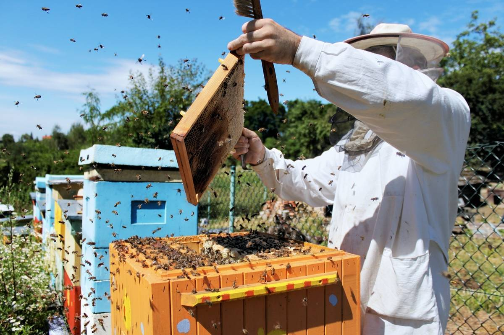

БРЕНД SWEET HONEY
Мы сами выполняем весь процесс создания наших натуральных продуктов в экологически чистых районах Башкирии: от начального этапа ухода за пчелами на пасеке до момента передачи продукта клиенту.
Наша семья занимается медом с 1922 года. Мы уже третье поколение, которое работает с пчелами и отдает всех нас любимому делу.
SWEET HONEY Родился в апреле 2016 года из простой семейной пасеки,
которая обеспечивала мёдом только друзей и знакомых. Но потом мы решили,
что мёд из Башкортостана нашего производства должны попробовать все!
Какими полезными свойствами известен башкирский мёд?
1. Богатый питательными веществами. Башкирский мёд содержит витамины, минералы, аминокислоты и ферменты, которые способствуют укреплению иммунитета и общему улучшению здоровья.
2. Антибактериальное действие. Мёд обладает антибактериальными свойствами, что помогает бороться с инфекциями и укреплять организм.
3. Улучшение пищеварения. Потребление мёда может помочь улучшить пищеварение и облегчить желудочные проблемы благодаря содержанию ферментов.
4. Энергетическое воздействие. Мёд является отличным источником быстрой энергии благодаря высокому содержанию углеводов, что может пригодиться как для физической, так и умственной активности.
5. Улучшение кожного состояния. Нанесение мёда на кожу может помочь смягчить ее, увлажнить и улучшить общее состояние.
2. Антибактериальное действие. Мёд обладает антибактериальными свойствами, что помогает бороться с инфекциями и укреплять организм.
3. Улучшение пищеварения. Потребление мёда может помочь улучшить пищеварение и облегчить желудочные проблемы благодаря содержанию ферментов.
4. Энергетическое воздействие. Мёд является отличным источником быстрой энергии благодаря высокому содержанию углеводов, что может пригодиться как для физической, так и умственной активности.
5. Улучшение кожного состояния. Нанесение мёда на кожу может помочь смягчить ее, увлажнить и улучшить общее состояние.
Как производится мёд?
1. Сбор нектара. Пчелы собирают нектар из цветков с помощью своего вытянутого язычка и хранят его в своем медовом желудке.
2. Передача нектара. После того, как пчела соберет нектар, она возвращает его в улей и передает другим пчелам для дальнейшей обработки.
3. Обработка нектара. Пчелы высыхают нектар, перемешивая его с ферментами в улье. Этот процесс помогает уменьшить влагу в нектаре и превратить его в мед.
4. Хранение меда. Затем пчелы хранят мед в сотах, где он "созревает" и приобретает свой характерный вкус и аромат.
5. Сбор мёда. Когда мёд готов, пчеловоды извлекают соты из улья и используют различные методы (например, отжим или центрифугирование) для извлечения мёда из сотов.
6. Фильтрация и упаковка. Извлеченный мёд фильтруется для удаления мелких частиц воска и других примесей, затем упаковывается в банки или другую упаковку для хранения и распространения.
2. Передача нектара. После того, как пчела соберет нектар, она возвращает его в улей и передает другим пчелам для дальнейшей обработки.
3. Обработка нектара. Пчелы высыхают нектар, перемешивая его с ферментами в улье. Этот процесс помогает уменьшить влагу в нектаре и превратить его в мед.
4. Хранение меда. Затем пчелы хранят мед в сотах, где он "созревает" и приобретает свой характерный вкус и аромат.
5. Сбор мёда. Когда мёд готов, пчеловоды извлекают соты из улья и используют различные методы (например, отжим или центрифугирование) для извлечения мёда из сотов.
6. Фильтрация и упаковка. Извлеченный мёд фильтруется для удаления мелких частиц воска и других примесей, затем упаковывается в банки или другую упаковку для хранения и распространения.